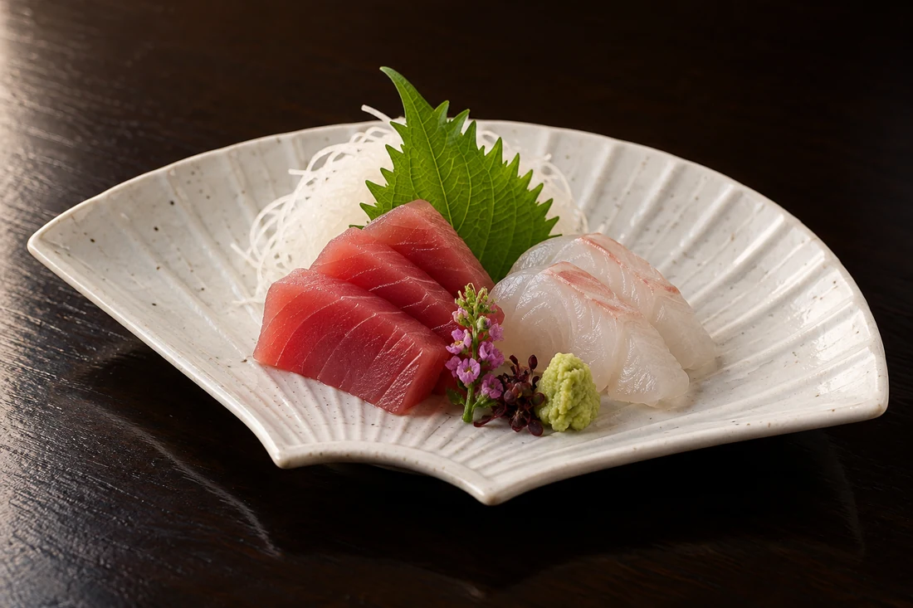
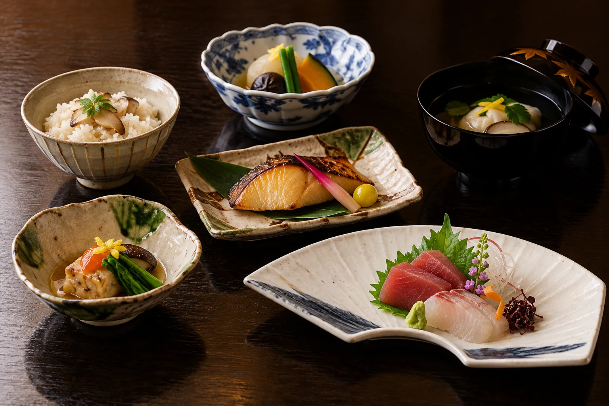
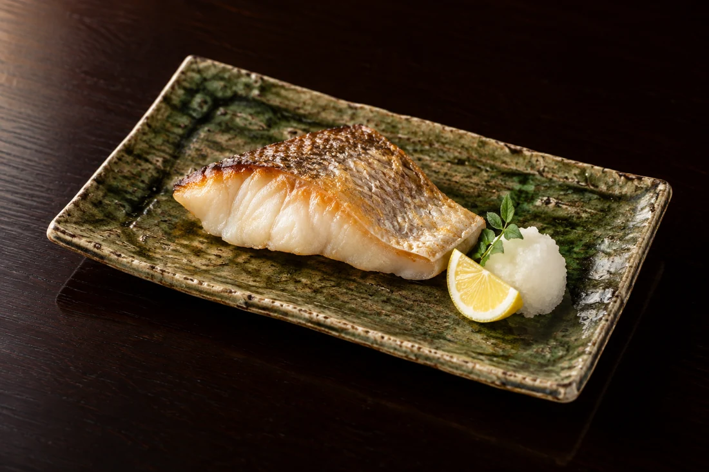
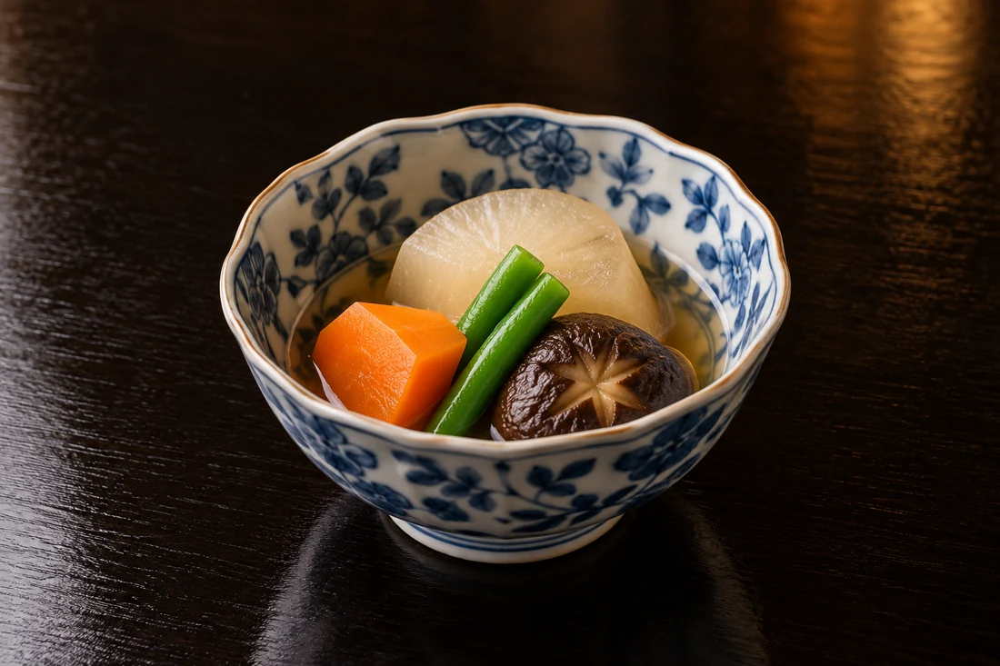
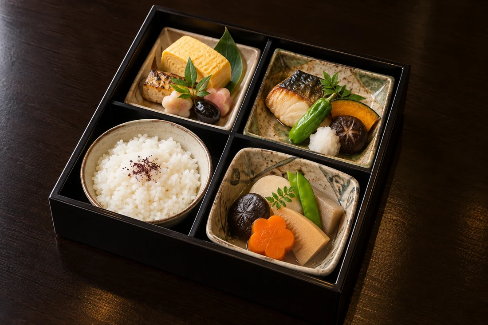
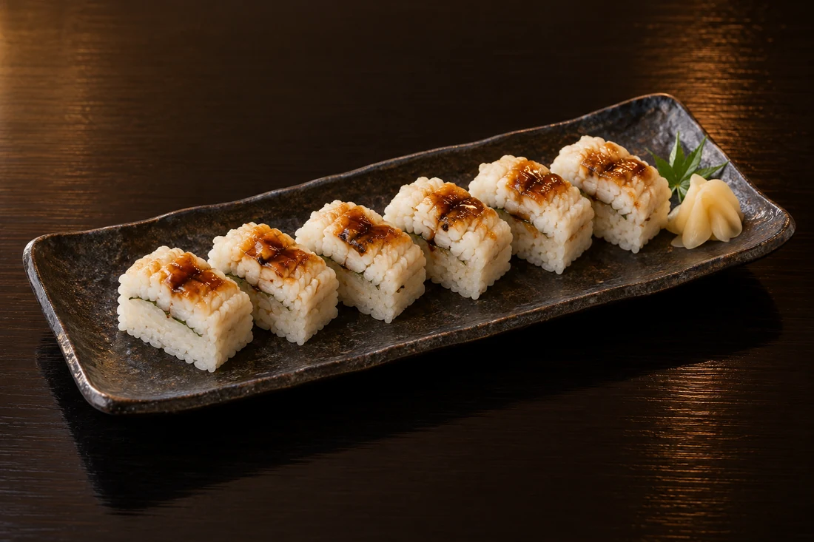
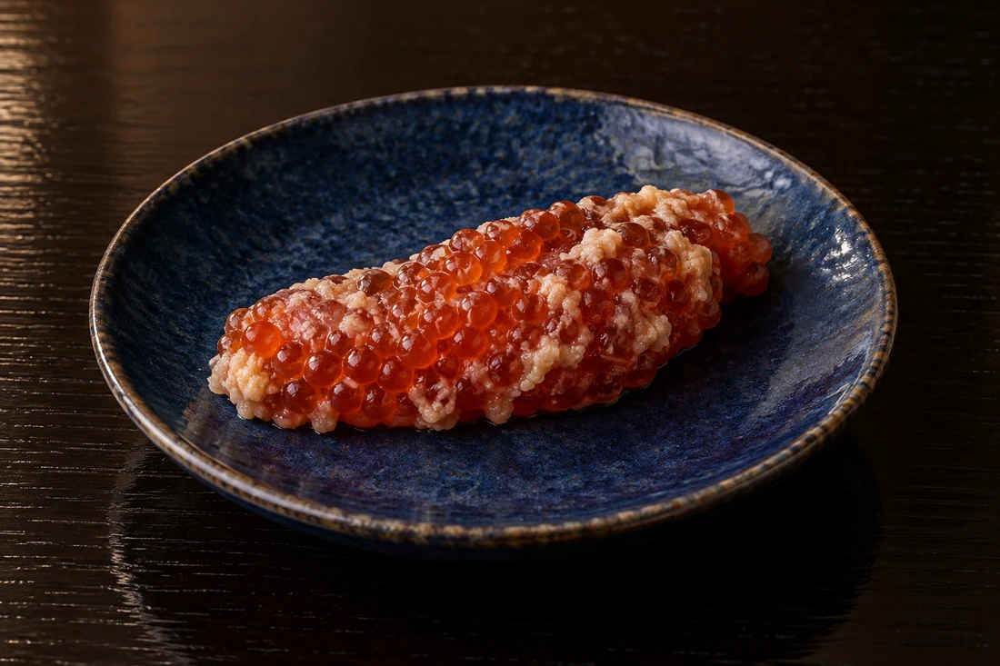
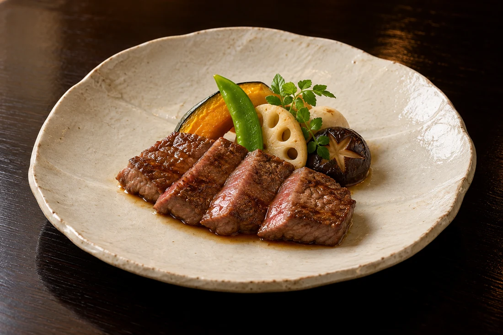

01
鮮やかな一皿から。
お造りの彩りと、魚の味わい。ひと皿ずつ、ゆっくりとお楽しみください。

四山楼について
伊藤博文公が四方の山々を望み、
名付けたと伝わる「四山楼」。
歴史を語る蔵座敷とともに、
大切な方を迎える食の時間をお届けします。
主屋と蔵座敷は、登録有形文化財。
お部屋はご用途や人数に合わせてご相談ください。
一 / お料理
器を替え、味わいを替え。
季節の料理を、集いの時間とともに。
お献立は季節・仕入れにより変わります。

お造りの彩りと、魚の味わい。ひと皿ずつ、ゆっくりとお楽しみください。

焼き物の香りに、会話がほどける時間。季節のひと皿を味わって。

煮物のやわらかな味わいが、食事の流れをつなぎます。
写真のお料理は一例です。魚種・食材・品数・器などは、お選びのコースや季節により異なります。
会席コース
ご用途・人数・ご予算を伺い、
お料理をご案内いたします。
お一人様。お料理・席料・サービス料を含みます。お飲み物等の追加料金、現在の内容はご予約時にご確認ください。
コースの相談をする ↗二 / 大切なお集まり
人生の節目を、ご家族で囲むお料理とともに。
お祝い膳 14,300円よりお一人様・税込
席料・サービス料などの条件はご予約時にご確認ください。
大切なお客様を迎える席や、親しい方々とのお集まりに。
故人を偲び、語らうひととき。ご人数・ご予算からご相談ください。
蔵の間や広間など、用途に合わせたお部屋をご案内いたします。
椅子・テーブル席のご希望、人数・設備・お席の条件は、ご予約時にお確かめください。
三 / お持ち帰り
ご家庭や職場でのお集まりにも。
お弁当・ご贈答品は、お電話でご注文を承ります。

仕切りのあるお弁当に、料理を少しずつ。

鱧の味わいを、お持ち帰りでも。
4個より・1週間前までにご予約ください。
配達または受け渡しは11:00〜18:00。配達地域・料金・数量・受け取り方法はお電話でお確かめください。食材は季節により変わります。
ご贈答・おみやげに

酒の肴や、ごはんのお供に。

300g・2〜3人前。季節の野菜を添えて。
写真は盛り付けの一例です。ご贈答品の内容・納期・発送方法・送料は、ご注文時にお確かめください。
公式サイトのお料理・商品案内へ四 / ご予約・お問い合わせ
ご希望の日時、ご人数、ご用途、ご予算を伺います。
お席とお料理について、お電話でご相談ください。
食物アレルギー・召し上がれない食材は、ご予約の際にお知らせください。対応の可否は事前に店舗へご確認ください。
お電話でご希望の日時・人数・ご用途をお知らせください。お料理、ご予算、お部屋についてご相談を承ります。
ご結納・ご接待・ご法要など、ご用途と人数をお伝えください。利用可能なお部屋や椅子席の条件を個別にご案内します。
敷地内に数台分の駐車スペースがあります。利用をご希望の方はご予約時にお申し付けください。その他の駐車場所は店舗へご確認ください。
人数・日時の変更やキャンセルの規定は、ご予約時にお確かめください。変更がある場合は早めに店舗へお電話ください。
ACCESS 店舗のご案内
お席・お料理・営業日はご予約時にご確認ください。
Google マップで行き方を見る地図から現在地からの経路を確認できます。
山形・七日町 四山楼